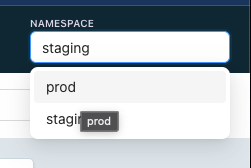
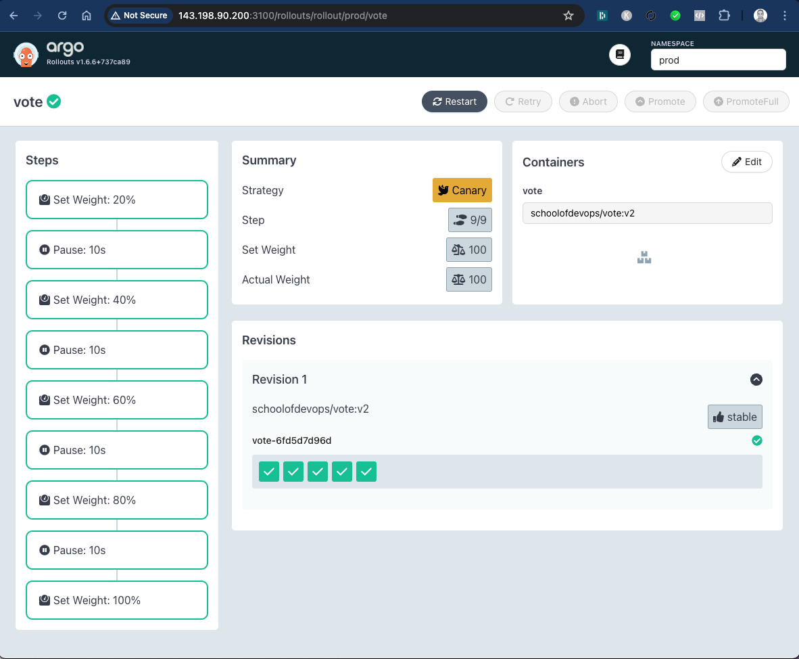
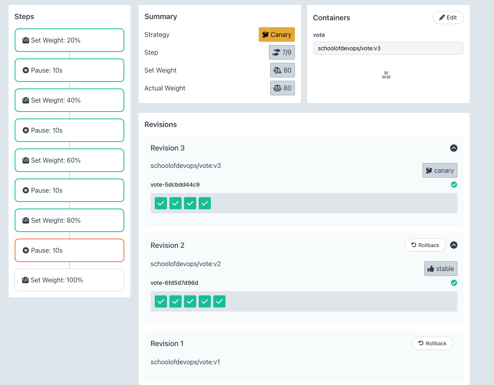

Implementing Canary Release for Prod
Author: Gourav Shah
Publisher: School of Devops
Version : v2024.06.03.01
Prepare Prod Environment
Create and switch to prod namespace
kubectl create ns prod
kubectl get ns
kubectl config set-context --current --namespace=prod
validate
kubectl config get-contexts
[sample output]
CURRENT NAME CLUSTER AUTHINFO NAMESPACE
* kind-kind kind-kind kind-kind prod
Create a copy of the kustomization code to set up prod with:
cd argo-labs
cp -r staging prod
update NodePort for prod
File : prod/service.yaml
apiVersion: v1
kind: Service
metadata:
name: vote
spec:
ports:
- name: "80"
nodePort: 30200
port: 80
protocol: TCP
targetPort: 80
type: NodePort
create previw service kustomization overlay
File: prod/preview-service.yaml
apiVersion: v1
kind: Service
metadata:
name: vote
spec:
ports:
- name: "80"
nodePort: 30300
port: 80
protocol: TCP
targetPort: 80
type: NodePort
update kustomization with
- namespace set to
prod - path for
preview-service.yamladded to patches section
File: prod/kustomization.yaml
apiVersion: kustomize.config.k8s.io/v1beta1
kind: Kustomization
resources:
- ../base
namespace: prod
commonAnnotations:
supported-by: sre@example.com
labels:
- includeSelectors: false
pairs:
project: instavote
patches:
- path: service.yaml
- path: preview-service.yaml
check
kustomize build prod
apply with
kubectl apply -k prod/
validate as
kubectl get all
Create Canary Release
Create prod/rollout.yaml with the patch configurations to update
- Replicas Count
- Strategy
as
Filename: prod/rollout.yaml
apiVersion: argoproj.io/v1alpha1
kind: Rollout
metadata:
name: vote
spec:
replicas: 5
strategy:
blueGreen: null
canary:
steps:
- setWeight: 20
- pause:
duration: 10s
- setWeight: 40
- pause:
duration: 10s
- setWeight: 60
- pause:
duration: 10s
- setWeight: 80
- pause:
duration: 10s
- setWeight: 100
add this rollout overlay spec to prod/kustomization.yaml in patches section as:
apiVersion: kustomize.config.k8s.io/v1beta1
kind: Kustomization
resources:
- ../base
namespace: prod
commonAnnotations:
supported-by: sre@example.com
labels:
- includeSelectors: false
pairs:
project: instavote
patches:
- path: service.yaml
- path: preview-service.yaml
- path: rollout.yaml
If you have kustomize installed, verify the configs from argo-labs as
kustomize build prod
apply
kubectl apply -k prod/
validate
kubectl get all,ro
If you have the Argo Rollouts Dashboard, switch the namespace from top right corner to prod

and check the Canary Release as

Before starting rollout start wathing for the following in 3 different terminals
[Termina 1]
watch kubectl get ro,all --show-labels
[Terminal 2]
watch kubectl describe svc vote
[Terminal 3]
watch kubectl describe svc vote-preview
You could also keep monitoring the Argo Rollouts Dashboard. Launch it if required as
kubectl argo rollouts dashboard -p 3100
Trigger a new rollout by modifying base/rollouts.yaml file with new image tag as
spec:
containers:
- image: schoolofdevops/vote:v2
and apply
kubectl apply -k prod
kubectl argo rollouts status vote
Here you could see the progressive canary in action, implmenting it step by step, ultimately rolling out the new version.

- A new replicaset is created to maintain the canary deployment during the rollout.
- Based on the weightage set in the strategy, proportionate number of pods are maintained for each replicaSet.
- Gradually, all pods are replaced with new version, shifting 100% traffic to it.
here is the output of the rollout status command above
[sample output]
Progressing - more replicas need to be updated
Paused - CanaryPauseStep
Progressing - more replicas need to be updated
Paused - CanaryPauseStep
Progressing - more replicas need to be updated
Paused - CanaryPauseStep
Progressing - more replicas need to be updated
Paused - CanaryPauseStep
Progressing - more replicas need to be updated
Progressing - updated replicas are still becoming available
Progressing - waiting for all steps to complete
Healthy
Getting Ready to add Traffic Management - Set up Nginx Ingress Controller
Install helm to setup Nginx Ingress Controller. To install helm version 3 on Linux or MacOS, you can follow following instructions.
curl https://raw.githubusercontent.com/helm/helm/master/scripts/get-helm-3 | bash
You could further refer to Official HELM Install Instructions for alternative options.
Verify the installtion is successful,
helm --help
helm version
Launch Nginx Ingress controller using helm as :
helm upgrade --install ingress-nginx ingress-nginx \
--repo https://kubernetes.github.io/ingress-nginx \
--namespace ingress-nginx --create-namespace \
--set controller.hostPort.enabled=true \
--set controller.hostPort.ports.http=80 \
--set-string controller.nodeSelector."kubernetes\.io/os"=linux \
--set-string controller.nodeSelector.ingress-ready="true"
Check the pod for Nginx Ingress, if its running
kubectl get pods -n ingress-nginx
You may see the pod in pending state. Check why its pending by describing it.
Once you descibe, you will see that its pending because it has a nodeSelector defined which is looking for a node with label set to ingress-ready="true".
Check the label on the current nodes
kubectl get nodes --show-labels
Add this lable to first of the worker nodes as
kubectl label node kind-worker ingress-ready="true"
validate
kubectl get nodes --show-labels
This time you should see the label added, and nginx ingress controller running, which can be validated using
kubectl get pods -n ingress-nginx --watch
Wait for the container for nginx ingress controller to be up. You could also validate by connecting to the IPADDRESS of your node where the cluster is beeng setup on port 80, where you should see **404 Not Found** error. This is the sign that nginx is set up as a ingress controller and looking for a request with hostname/path defined.
Add Ingress Rule with Host based Routing
Once you have the ingress controller working, add the following ingress rule
File : prod/ingress.yaml
---
apiVersion: networking.k8s.io/v1
kind: Ingress
metadata:
name: vote
namespace: instavote
spec:
ingressClassName: nginx
rules:
- host: vote.example.com
http:
paths:
- path: /
pathType: Prefix
backend:
service:
name: vote
port:
number: 80
add this new manifest resources section of kustomization.yaml so that it gets applied as
File: prod/kustomization.yaml
apiVersion: kustomize.config.k8s.io/v1beta1
kind: Kustomization
resources:
- ../base
- ingress.yaml
and apply with
kubectl apply -k prod/
At this time, you would have ingress rule applied.
You could validate it using
kubectl get ing
kubectl describe ing vote
Also add the host file configuration as per this lab guide and validate you are able to use http://vote.example.com/ to access vote service via ingress.
If you browse to the nginx ingress URI, you should see the app as

With this you have successfully set up Nginx Ingress Controller in front of your prod app and are ready to use Traffic Management features of Argo Rollouts.
Canary with Traffic Routing
Read this document to understand the need for traffic routing. You could set up the traffic routing rules with Nginx by modifying the rollout spec as
File : prod/rollout.yaml
apiVersion: argoproj.io/v1alpha1
kind: Rollout
metadata:
name: vote
spec:
replicas: 5
strategy:
blueGreen: null
canary:
canaryService: vote-preview
stableService: vote
trafficRouting:
nginx:
stableIngress: vote
steps:
- setWeight: 20
- pause:
duration: 10s
- setWeight: 40
- pause:
duration: 10s
- setWeight: 60
- pause:
duration: 10s
- setWeight: 80
- pause:
duration: 10s
- setWeight: 100
You could refer to Nginx Ingress Controller for Traffic Routing document to understand this spec.
and apply as
kubectl apply -k prod/
Once the new configuration is applied, you could try rolling out a few times by updating the image tag in base/rollout.yaml.
You could watch using the same commands as earlier as well as using Argo Dashboard. You could also watch for a new ingress created for canary service created during rollout as
kubectl describe ing vote-vote-canary
where you will see the weight changing as the release progresses.
e.g.
when weight is set to 20%
Every 2.0s: kubectl describe ing vote-vote-canary argo-01: Tue Jun 4 08:08:10 2024
Name: vote-vote-canary
Labels: <none>
Namespace: prod
Address:
Ingress Class: nginx
Default backend: <default>
Rules:
Host Path Backends
---- ---- --------
vote.example.com
/ vote-preview:80 (10.244.1.18:80)
Annotations: nginx.ingress.kubernetes.io/canary: true
nginx.ingress.kubernetes.io/canary-weight: 20
Events:
Type Reason Age From Message
---- ------ ---- ---- -------
Normal Sync 20s (x2 over 2m) nginx-ingress-controller Scheduled for sync
after weight changed to 40%
Annotations: nginx.ingress.kubernetes.io/canary: true
nginx.ingress.kubernetes.io/canary-weight: 40
While you are rolling our a Canary with traffic routing this time, you will observe that
- While the release is in progress, unlike earlier, the stable/main replicaSet does not reduce proportionate to step capacity percentage.
- Ingress Controller/Service Mesh, in this case Nginx, does the job of routing between stable and canary versions, not tied to the proportationte number of pods.
- This is to make sure that, any time there is a need to abort and roll back, 100% capacity is available with the stable version.

Try rolling out a few times to understand the nuances of how canary works with nginx ingress controller and traffic routing rules.
Publish Changes to Repo
Commit all the changes that you have made so far to the repo as:
git status
git add base/*.yaml
git add prod/*.yaml
git status
git commit -am "added canary releases for prod"
git push origin main
Cleaning Up
Once you are done with this lab, clean up the environment with
kubectl delete -k prod/